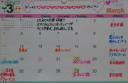

| 2012/03 21 Wed | ひめたん(* ゝω・*)ノ その108 |
昨日は励ましのメッセージありがとうございました!
ひとつひとつ読みました。
読むってより、お言葉を聞くって感覚だったかなっ
ふぁみりー。いい響き(^^)♪
それで、とにかくぶろぐは突っ走るって決めたので
これからも更新がんばります(`・・)!
みなさんが遊びに来るの待っとるよー☆
あ。
もっと素直になりなさい?って言ってもらえたので
たまには直球どストレートに書くのもいいかなって思った(*^ω^*)
直球すぎて受けとめられないときは危険なので逃...
いや頑張って受けとめてください
 わら
わら
わら
あといっこ思ったのがね
間違い探しの正解を発表してなかった(・ω・)!
けど前の記事に発表するのはさすがにだめかなーて空気をよんだ結果、
今から発表するよー♪
ん?
「間違い探し」「間違え探し」どっちだろ('・・`)←
まとりあえず発表するよー♪♪
って言うまでもないよね。
「HIMEKA
WA
」さんじゃないからね。
いや間違い?え?探しにするような問題じゃないじゃないかって。
答えが1っなんて
誰も言ってなーい(o>ω<o)!
ひっかかったしょ?
ひっかかったよねー?
実はタイトルの顔文字がいつもと違ったんだよ(*´・ω・*)
...。
てのはたまたまひめたんが打ちまつがえました←
ま、まつがえいっこやないやんっ(・o・ノ)ノ!
てあとから気付きました。
ちーん。
HIMEKA
WA
さん指摘した方が正解ですひねくれてごめんなさい。
しかもね、これは間違い?え?とかじゃないけど
記事の書き出しに
おむすび
ついてたの。
えっと...。
記事におむすび貼ったのひめたんじゃないよ?わら
投稿した記事にはおむすびなんかなかったもん!
記念におむすびでこめ保存したんだけど
ひめたんの携帯は表示してくれんかった(;'`)
おむすびどこから来たのおむすび...。
きっとこれが「おむすびころりん」だよね(^-^)!
ひめたんすごいよ童話の世界を体験しちゃったよ高山ったよー!!!
ということにしておきます。
信じてないでしょ?
ほんとだってば!
質問ありがとうっ!
 フード隊のラストやってんけどちゃんと覚えてくれてるかな?
フード隊のラストやってんけどちゃんと覚えてくれてるかな?
ああ可愛いらしいフード隊のみなさま(*^^*)
覚えておりますよ!滋賀だよね?あってるよねー?
 ひめたん!!!!3月のカレンダーお願いします♪♪
ひめたん!!!!3月のカレンダーお願いします♪♪
遅くなりすぎましたごめんなさいーいいぃ!

...なんか上手い具合に貼れない←
画質粗いよーなんでー?
きれいに貼れるようになったらまた再アップします!
それまでこの小さいカレンダーで我慢してー(;'∩`)
ひめたんの私服はLIZLISA?
よくわかりましたね!
LISLISA可愛いよね(*^^*)ひめたんLISLISAのワンピ好きだよー♪
ひめたんそいえば
さゆにゃん
(井上小百合chan)と
みゅみゅ
(若月佑美chan)と
何かおそろいのLISLISAグッズ持ってんの!
次のシングルの握手会から絶対福岡から行くから待っててくれるかな?
ほんまにー(^ω^)♪
そりゃもちろん嬉しいけれども、無理はせんでね?
福岡行きたいなあ。でも一回イベントで福岡行ったんだよな。
また行けるかしらー?
乃木坂の誰かがおじゃましたらよろしくお願いしますねっ☆
 この富山弁わかる?「だら」「〜せんなん」「だいて」
この富山弁わかる?「だら」「〜せんなん」「だいて」
だら→だよ
〜せんなん→〜しようよ
だいて→だだだだ抱いてっ

 わら
わら
わら
にゃー完全に勘ですこれ。わっからーん!
人気のあるお好み焼き屋さんを教えて下さいな?
広島人はおうちでお好み焼き焼いちゃいますので
そーゆー情報にはうといっちゃうといけど...
前にイベント行ったときにお邪魔した「あとむ」さん!
お好み村の4Fにあるんだけれども。
美味しかったよー♪
有名人さんもたくさん食べにいらしたって聞いたし(^^)
さゆりんご
(松村沙友理chan)
ななせまる
(西野七瀬chan)
ろってぃ
(川村真洋chan)と
ひめたん
4人でサインも書いたしね♪
ひめたんは、グアムに行ったことある?
なっしんぐ('`)←
楽しそーう行きたーいけど飛行機が怖ーい。
けどやっぱし行きたい!
誰か連れてってください☆
ひめたん(*´・ω・*)
コメント(108)
2012/03/21 00:00